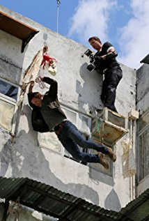
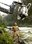

Brandon, a respected street fighter, is forced to flee the city after his brother is murdered and the money that was supposed to be paid back to a local gangster is stolen. While lying low at his father's house in a small Southern town, Brandon soon gets involved in the local underground cage-fighting circuit. With the help of Drake Colby, a former MMA champion, Brandon devises a scheme to bring a massive payday, if they are able to survive.
Speelduur: 1 u 30 m
Jaartal van publicatie: 2010

Mike Gunther
Danny Trejo as Marcus
Eric Balfour as Victor Dean

Rudy Youngblood as Brandon Becker